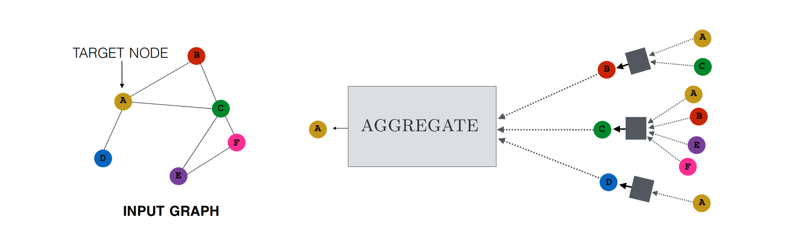

Neural Message Passing
Most GNN's use some variant of Neural Message Passing where vector messages are exchanges between nodes and are updated using neural networks
Graph
\[\begin{aligned}
G = (V, E) \\
\end{aligned} \]
Node Features
\[\begin{aligned}
\boldsymbol{X} \in \mathbb{R}^{d \times |V| } \\
\end{aligned} \]
Node Embeddings
\[\begin{aligned}
\boldsymbol{z_u}, \forall u \in V \\
\end{aligned} \]
Hidden embedding:
\[\begin{aligned}
\boldsymbol{h} = \{ \vec{h_{1}}, \vec{h_{2}}, \ldots ,\vec{h_{N}}\} \\
\end{aligned} \]
Node vs Edge embeddings:
\[\begin{aligned}
h_{u}^{(k)}, u & \in V \\
h_{(u,v)}^{(k)}, (u,v) & \in E \\
\end{aligned} \]
Goal: Combine the information from neighboring nodes to encode contextual graph information
At every iteration, each node receives information from it's neighbors
The information is then combined with the current features with a learnable function
Message Passing Framework

\[\begin{aligned}
\small{ h_{u}^{(k+1)} = {\rm {\tiny UPDATE}}^{(k)} \left( h_{u}^{(k)}, {\rm {\tiny AGGREGATE}}^{(k)} \left( \{ h_{v}^{(k)}, \forall v \in \mathcal{N}(u)\} \right) \right) }\\
\end{aligned} \]
\[\begin{aligned}
\small{ h_{u}^{(k+1)} = {\rm {\tiny UPDATE}}^{(k)} \left( h_{u}^{(k)}, m_{\mathcal{N}(u)}^{(k)} \right) }\\
\end{aligned} \]
At each iteration $k$ of the GNN:
$\tiny{AGGREGATE}$ all embeddings from $u$'s neighbors to generate a message $m_{\mathcal{N}(u)}^{(k)}$ based on this aggregated neighborhood information
$\tiny{UPDATE}$ the embedding $h_{u}^{(k)}$ of node $u$ by combining information from the previous embedding $h_{u}^{(k-1)}$ and with the message $m_{\mathcal{N}(u)}^{(k)}$
After running $K$ iterations:
Use the output of the final layer to define the embeddings for each node:
\[\begin{aligned}
z_{u} = h_{u}^{(K)}, \forall u \in V \\
\end{aligned} \]
The Basic GNN
\[\begin{aligned}
\small{
h_{u}^{(k)} = \sigma
\left(
W_{\textrm{self}}^{(k)} h_{u}^{(k-1)} +
W_{\textrm{neigh}}^{(k)}
\sum_{v \in N_{u}} h_{v}^{(k-1)} + b^{(k)}
\right)
}\\
\end{aligned} \]
$h_{u}^{(k-1)} \in \mathbb{R}^{d^{(k-1)}}$: Node embeddings
$W_{\textrm{self}}^{(k)}, W_{\textrm{neigh}}^{(k)} \in \mathbb{R}^{d^{(k)} \times d^{(k-1)}}$: Learnable parameters
$b^{(k)} \in \mathbb{R}^{d^{(k)}}$: Bias term
$\sigma$: Elementwise non-linearity (e.g., a tanh or ReLU)